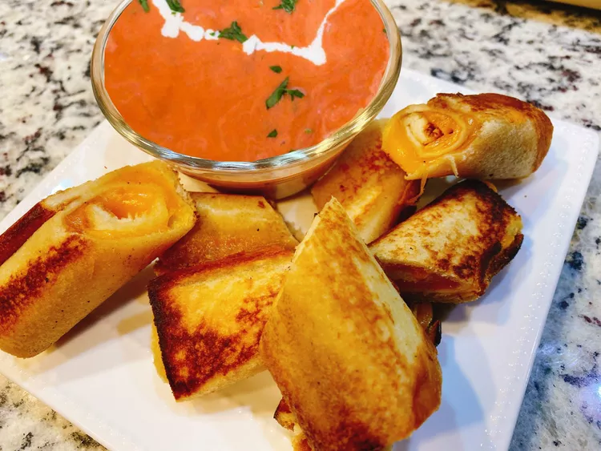

Grilled Cheese Roll Ups

Discription
The beloved grilled cheese sandwich is elevated by being rolled up and pan fried. Serve with a bowl of warm tomato soup to round out this timeless appetizer
Ingrediants
-
4 slices artisan-style bread
-
4 slices sharp Cheddar cheese, at room temperature
-
2 tablespoons softened butter
Steps
-
Place bread slices on a cutting board and carefully remove crusts.
-
Using a rolling pin, flatten the bread widthwise. Spread butter on outer edges of the bread.
-
Place one slice of cheese on the non-buttered side. Roll bread and cheese together to create a spiral effect.
-
Heat a heavy skillet over medium high heat. Place roll up into then skillet, butter side down. Grill on all sides until golden brown. Remove roll ups and slice diagonally if desired. Enjoy.
Reference
page